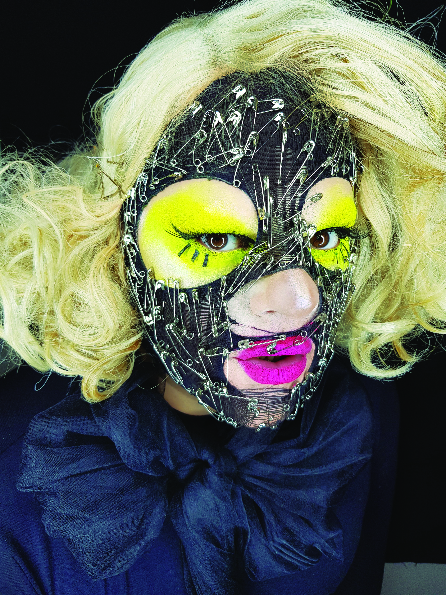

Drag queen
Drag queen
desde 2009
Surgida em 2009, Dalva, ou Dalvinha Brandão, é a minha persona drag. Ela é comediante, palestrante, cantora e compositora, e tornou-se referência no cenário drag e transformista brasileiro tanto pela atuação como performer quanto pela criação de espaços de formação, encontro e pesquisa.
Eu já vinha me montando antes, mas dentro do teatro. Fiz uma personagem caricata em O analfabeto político, apareci montado em outros espetáculos. Não era o meio drag queen, era personagem. Em 2009, comecei a me montar eventualmente fora do meio artístico. O contato com a cena drag mesmo veio em Salvador, em 2011, quando me montei e fiz um show numa boate gay pela primeira vez.

Dalva. Divulgação. Produção e foto Aurélio Dominoni.
23